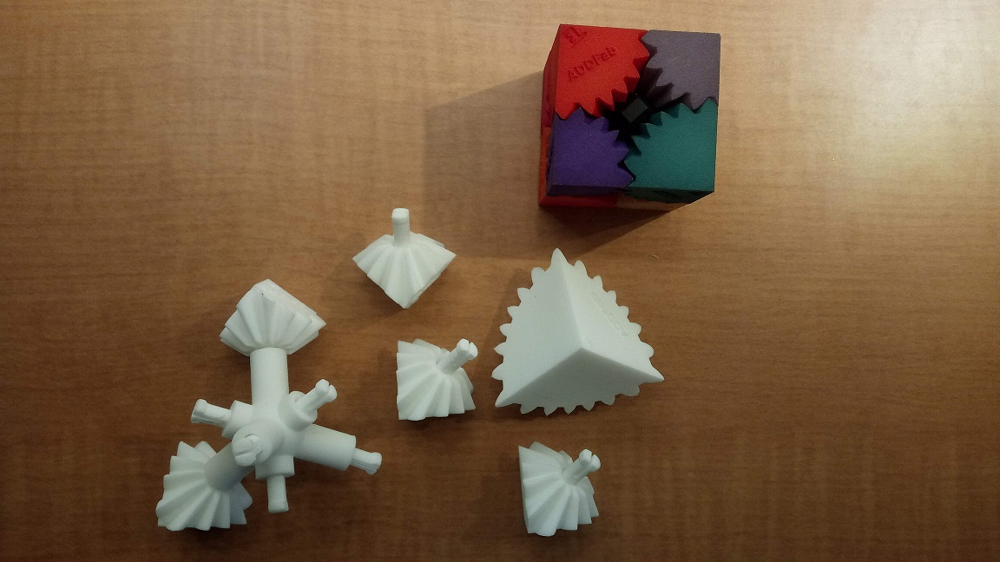
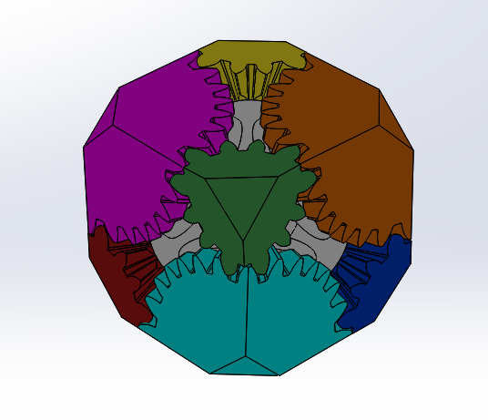
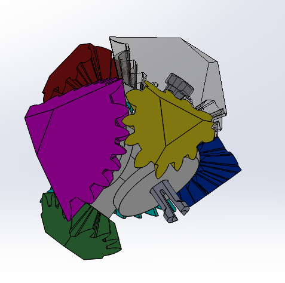
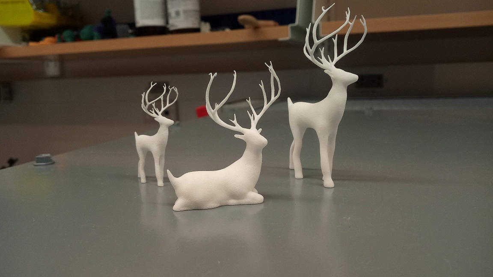
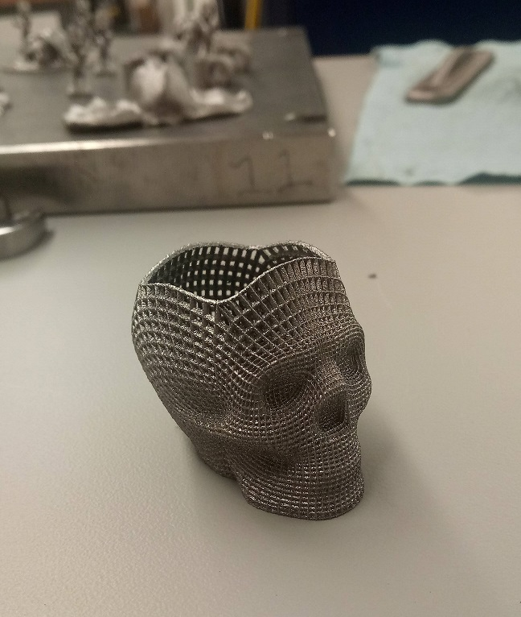
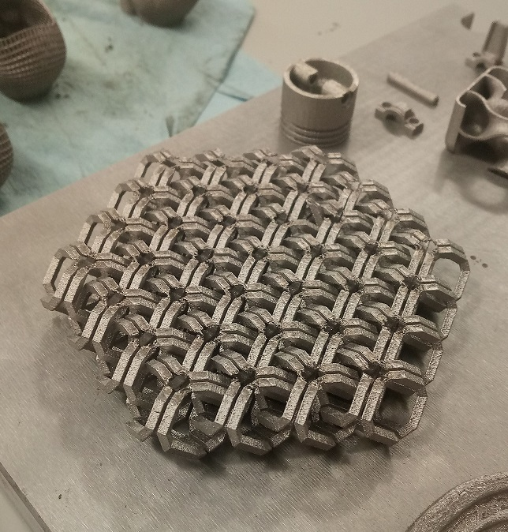
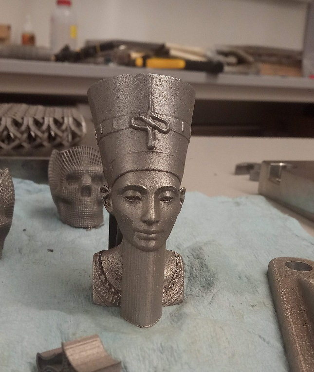
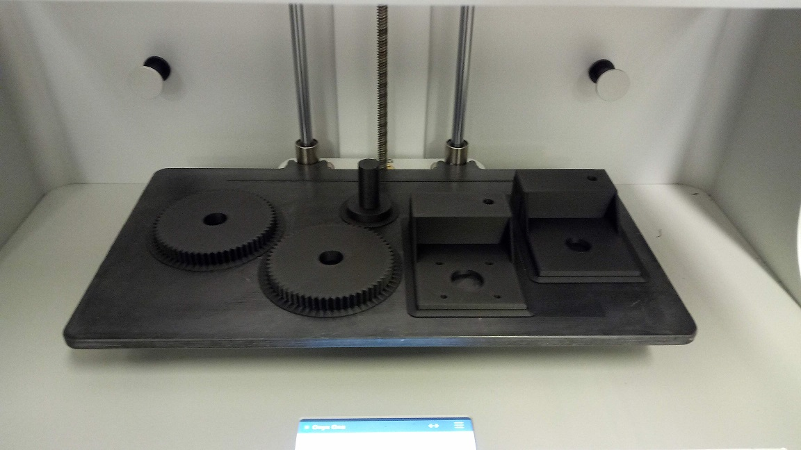
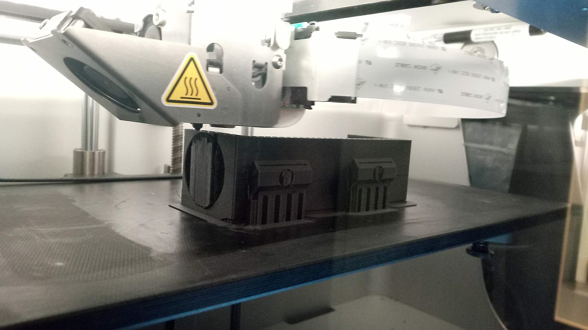

Overview:
I currently work as an Additive Manufacturing & Design Engineer at ADDFab. It was converted to a part-time position when I got
an offer for a full-time job in Massachusetts. I started working as a volunteer
at this facility. I didn't know that UMass has such a huge, high-tech 3D printing research lab until Fall 2018. I came to know about 3D printing when
I took a course on Additive Manufacturing during my MS degree. As a part of that course, I got the opportunity to visit ADDFab
lab. I was simply awestruck by the top-notch printers at this facility. After the tour, I requested the director of the lab to allow me
to work as a volunteer so that I can gain hands-on experiences along with the theoritical stuff. That's how my journey started!
Since then, I have worked on multiple projects and have helped researchers on campus and in local industries to rapid prototype
parts in less turnaround time. My motivation to work at ADDFab is to explore the capabilities of Additive Manufacturing and
evaluate 3D Printing as a potentially vibale solution for rapid prototyping parts. I basically help people to design parts
from napkin sketch, propose best material based on their requirements and 3D print parts using metal and polymer printers.
The overall experience has been good so far. It really feels great when you 3D print parts and
empower the reseachers to do great things so that they can contribute to the society for better living.
I have a huge list of projects which I have worked on during my tenure. I won't be able to share pictures of the projects as
most of them are patented designs. But I can give you some information just to give you a taste of it.
- Obaggo Plastic Bag Recycling: Obaggo is a kitchen appliance that enables you to recycle your plastic bags and packaging film,
such as bread bags, cereal box liners, paper product overwrap, etc., in the comfort and convenience of your curbside recycling
bin. " Our solution for recycling plastic film is to enable consumers and businesses to densify their plastic into rigid pucks
that are economical to collect curbside, and easy to sort at Material Recovery Facilities. We want to prove that this
material is valuable by turning the collected material into new recycled products, creating a circular economy for thin
film plastic packaging" - David New, Obaggo Recycling, LLC (https://www.obaggo.com/)
- Arm Band Casing, a wearable device, used to monitor health in a real-world settings.
- Elateq's Water Purification Technology, a cleaner and greener way to purify water. (http://www.elateq.com/about-us/)
- Custom glasses for Avana 3D, satisfy even the hardest to fit customers with frames made just for them. (https://www.avana3d.com/)
- Circuit Board casings for Roll to Roll Fabrication. (https://blogs.umass.edu/xiandu/)
- Gear Cube designing and prototyping, for fun! I can share some real images of this project as I was the owner of this project.



and many more!
Roles & Responsibilities:
- Explore the capabilities of Additive Manufacturing by researching AM technologies with different 3D printers.
- Operating, maintaining all 3D printers (EOS, Stratasys, LENS, Markforged) and performing routine maintenance activities like fixing electrical/ mechanical issues with printer manufacturers.
- Setting up print jobs in AM software like Materialise Magics for part orientation, part nesting, supports design, and improving part packing density, build success rate and productivity.
- Streamlined traditional manufacturing methods by researching and scrutinizing AM technologies like SLA, DLP, FDM, BJ, SLS, SLM, and LENS for supporting green manufacturing initiatives.
- Achieved quality improvement and reduction in defect, energy cost, material waste for 3D printed parts by optimizing build layout, varying print parameters, performing post-processing, tolerance analysis using DFA/ DFM principles.
- Delivered cost-effective solutions with best in class material selection by designing and rapid prototyping complex, functional parts from napkin sketch for R&D initiatives by reducing lead time and eliminating tooling/fixture cost.
- Promoted Additive Manufacturing at college by giving presentations and providing consultation to eliminate traditional manufacturing methods.
- Exploring and learning ways to examine part performance, mechanical properties and dimensions of printed parts by Nikon CMM, Hardness Tester, Instron ElectroPuls.
This page is under construction. Stay tuned for more projects. In the meantime, please enjoy some pics from the lab.





